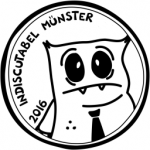

InDISCutabel Münster war ein Scheibensportverein aus Münster, der in die über 20-jährige Tradition von Ultimate Frisbee beim Hochschulsport Münster und verschiedenen Vereinen von 2016 bis 2021 fortgeführt hat.
Wer heute in Münster Frisbees werfen will:
Hier geht es zur Hochschulsportgruppe InDISCutabel.
Alle Scheibensportarten werden bei SC Münster 08 betrieben.
